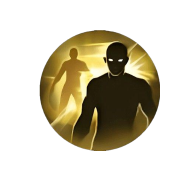
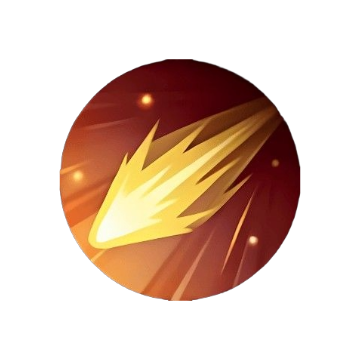
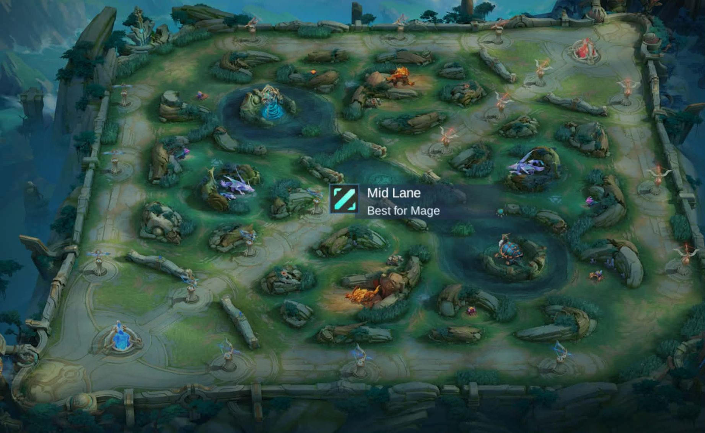

Often Used Emblems

Mage Emblem
Increases Magic Power and Magic Penetration for higher burst damage.

Assassin Emblem
Grants extra movement speed and adaptive penetration for burst Mage heroes.
The Mid Laner controls the center lane and plays an important role in supporting teammates through fast rotations. Since the Mid Lane is the shortest lane on the map, Mid Laners can quickly clear waves and move to other parts of the battlefield to assist in fights, secure objectives, or pressure the enemy. Most Mid Laners are Mages capable of dealing high burst damage or crowd control, making them valuable in team fights from the early game to the late game.
Mid Lane
Clear Waves
Rotate
Support Team
Mage
Assassin
Mage Emblem
Assassin Emblem
Flicker
Flameshot
Purify
Eliminate minion waves quickly to gain lane priority and create opportunities to rotate.
Move to side lanes or objectives after clearing waves to help teammates secure kills and objectives.
Deal burst damage or crowd control while staying in a safe position behind the frontline.

Instantly repositions your hero to escape danger or reposition during team fights.

Deals long-range damage and can finish off escaping enemies while keeping a safe distance.
Removes crowd control effects, helping Mid Laners survive against teams with heavy CC.
Increases Magic Power and Magic Penetration for higher burst damage.
Grants extra movement speed and adaptive penetration for burst Mage heroes.
